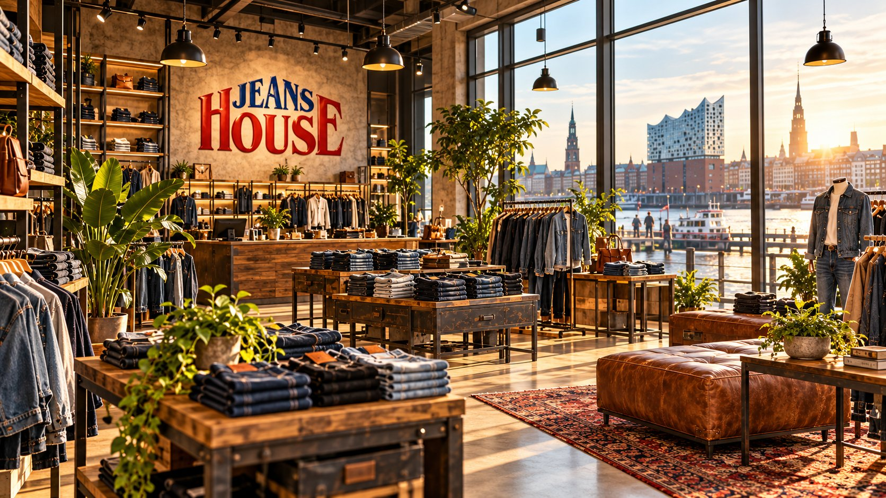

Die richtige Jeans
findest du nur anprobiert.
Persönliche Beratung in Wandsbek. Wir nehmen uns Zeit für dich.
Zur Passform-BeratungSo findest du unsDieselbe Größe sitzt in jeder Marke anders. Deshalb beraten wir dich im Laden, bis die Jeans wirklich zu dir passt.
Komm vorbei. Wir finden deine Jeans.
Wandsbeker Allee 68, 22041 Hamburg. Mo–Fr 10–19 Uhr, Sa 10–18 Uhr.
Öffnungszeiten & Anfahrt